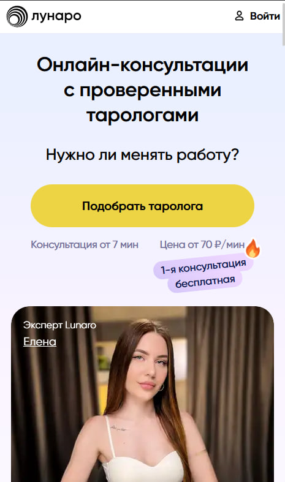

1. Lunaro.ru — гадание таролога онлайн и расклад «под ключ» без установки приложений
Сайт: Lunaro.ru
Lunaro позиционирует себя как «закрытый клуб» сертифицированных тарологов, где доступны услуги таролога: модераторы пропускают к клиентам только одного из двадцати претендентов. При регистрации пользователь сразу видит ленту свободных экспертов с поминутной стоимостью (от 70 ₽) и краткой специализацией: любовное гадание, карьерный расклад, путь героя, ресурсный расклад или диагностика отношений. За первые семь бесплатных минут легко проверить, насколько таролог консультант понимает суть вопроса, и погадать на картах таро без финансового риска.
После подключения специалист включает видео или остаётся в чате — формат вы выбираете сами. Таролог выкладывает кельтский крест, сигнификатор клиента или быстрый расклад «три карты» прямо под камеру, поясняет скрытые влияния и рекомендует, какую карту совета стоит держать на виду. Все фото арканов и текстовая расшифровка автоматически сохраняются в личном кабинете: в любой момент можно заглянуть и сравнить предсказание судьбы с реальными событиями.
Если нужно спросить у таро онлайн повторно, достаточно нажать «продолжить сеанс» — платёж спишется поминутно, лишнего вы не заплатите.
Попробовать сервис можно уже сейчас: откройте Lunaro.ru.
При нажатии «Начать консультацию» и за счёт подарочного времени задайте первый точный вопрос картам.